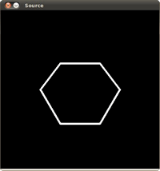

Point Polygon Test¶
Theory¶
Code¶
This tutorial code’s is shown lines below. You can also download it from here
#include "opencv2/highgui/highgui.hpp"
#include "opencv2/imgproc/imgproc.hpp"
#include <iostream>
#include <stdio.h>
#include <stdlib.h>
using namespace cv;
using namespace std;
/** @function main */
int main( int argc, char** argv )
{
/// Create an image
const int r = 100;
Mat src = Mat::zeros( Size( 4*r, 4*r ), CV_8UC1 );
/// Create a sequence of points to make a contour:
vector<Point2f> vert(6);
vert[0] = Point( 1.5*r, 1.34*r );
vert[1] = Point( 1*r, 2*r );
vert[2] = Point( 1.5*r, 2.866*r );
vert[3] = Point( 2.5*r, 2.866*r );
vert[4] = Point( 3*r, 2*r );
vert[5] = Point( 2.5*r, 1.34*r );
/// Draw it in src
for( int j = 0; j < 6; j++ )
{ line( src, vert[j], vert[(j+1)%6], Scalar( 255 ), 3, 8 ); }
/// Get the contours
vector<vector<Point> > contours; vector<Vec4i> hierarchy;
Mat src_copy = src.clone();
findContours( src_copy, contours, hierarchy, RETR_TREE, CHAIN_APPROX_SIMPLE);
/// Calculate the distances to the contour
Mat raw_dist( src.size(), CV_32FC1 );
for( int j = 0; j < src.rows; j++ )
{ for( int i = 0; i < src.cols; i++ )
{ raw_dist.at<float>(j,i) = pointPolygonTest( contours[0], Point2f(i,j), true ); }
}
double minVal; double maxVal;
minMaxLoc( raw_dist, &minVal, &maxVal, 0, 0, Mat() );
minVal = abs(minVal); maxVal = abs(maxVal);
/// Depicting the distances graphically
Mat drawing = Mat::zeros( src.size(), CV_8UC3 );
for( int j = 0; j < src.rows; j++ )
{ for( int i = 0; i < src.cols; i++ )
{
if( raw_dist.at<float>(j,i) < 0 )
{ drawing.at<Vec3b>(j,i)[0] = 255 - (int) abs(raw_dist.at<float>(j,i))*255/minVal; }
else if( raw_dist.at<float>(j,i) > 0 )
{ drawing.at<Vec3b>(j,i)[2] = 255 - (int) raw_dist.at<float>(j,i)*255/maxVal; }
else
{ drawing.at<Vec3b>(j,i)[0] = 255; drawing.at<Vec3b>(j,i)[1] = 255; drawing.at<Vec3b>(j,i)[2] = 255; }
}
}
/// Create Window and show your results
char* source_window = "Source";
namedWindow( source_window, CV_WINDOW_AUTOSIZE );
imshow( source_window, src );
namedWindow( "Distance", CV_WINDOW_AUTOSIZE );
imshow( "Distance", drawing );
waitKey(0);
return(0);
}
Explanation¶
Result¶
Here it is:
 
Help and Feedback
You did not find what you were looking for?- Ask a question on the Q&A forum.
- If you think something is missing or wrong in the documentation, please file a bug report.